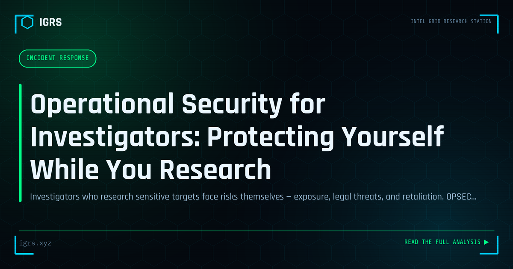

Operational Security for Investigators: Protecting Yourself While You Research
| File No. | IGRS-055/2026 |
| Subject | OPSEC principles and practical controls for OSINT investigators and threat intelligence analysts in India |
| Category | OSINT Fundamentals |
| Author | Manuj Kumar Pandey |
| Published | 2026-05-21 |
| Reading time | 12 minutes |
Investigators who research sensitive targets face risks themselves — exposure, legal threats, and retaliation. OPSEC principles for staying protected while staying effective.
Operational Security for Investigators
For OSINT investigators and security professionals, the investigation itself can expose the investigator — alerting subjects, revealing identity, or compromising sensitive operations. Operational security (OPSEC) is the discipline of protecting the investigator and the investigation from exposure. For Indian investigators working sensitive cases, sound OPSEC is essential. This guide covers the principles and practices of investigative OPSEC.
Why OPSEC Matters
Investigations leave traces. Viewing a profile may notify the subject, a research account may be linked to the investigator's identity, and patterns of activity may reveal an operation. For investigations into criminals, fraud networks, or hostile actors, this exposure can compromise the case, endanger the investigator, or tip off the subject. OPSEC prevents these outcomes by controlling what the investigation reveals.
Core OPSEC Principles
| Principle | Application |
|---|---|
| Compartmentalisation | Separate investigative identity from personal |
| Minimal footprint | Avoid alerting subjects |
| Attribution control | Mask identity and location |
| Need to know | Limit who knows operation details |
Research Accounts and Identity Separation
Investigators should never use personal accounts for investigation. Dedicated research accounts, properly separated from personal identity, prevent linking the investigation to the investigator. These accounts should have no connection to real identity, consistent but non-attributable personas where permitted, and careful management to avoid cross-contamination. Maintaining strict separation between investigative and personal digital lives is a foundational OPSEC practice.
Avoiding Subject Alerts
Many platforms notify users of certain interactions — LinkedIn shows profile views, some apps reveal when content is accessed. Investigators must understand these mechanisms and avoid alerting subjects. This means using anonymous or private viewing where available, being cautious about any interaction that generates notifications, and never engaging directly with a subject's content in ways that reveal scrutiny. Inadvertent alerts can compromise an entire investigation.
Network and Location Protection
An investigator's IP address and location can expose them. Using VPNs or other measures to mask IP, being aware of how requests can be logged and traced, and separating investigative network activity from personal are important protections. For sensitive work, investigators layer these measures, understanding that any single tool has limitations and that comprehensive protection requires multiple controls working together.
Evidence and Data Handling
OPSEC extends to how investigative data is stored and handled. Sensitive case data must be protected from exposure, stored securely, and shared only on a need-to-know basis. Compromise of investigative data can endanger the operation and the investigator. Proper data handling — encryption, access control, and compartmentalisation — is as much a part of OPSEC as masking online activity.
Building OPSEC Discipline
For Indian investigators, OPSEC is a discipline built through consistent habits: maintaining separate investigative identities, controlling footprint and attribution, avoiding subject alerts, protecting network identity, and handling data securely. These practices protect both the investigation and the investigator, particularly in sensitive cases involving criminals or hostile actors. As OSINT becomes central to investigations, strong OPSEC discipline distinguishes the professional investigator who operates safely and effectively from one whose own activity becomes a liability. Building these habits into every investigation, regardless of apparent sensitivity, ensures they are second nature when they matter most.